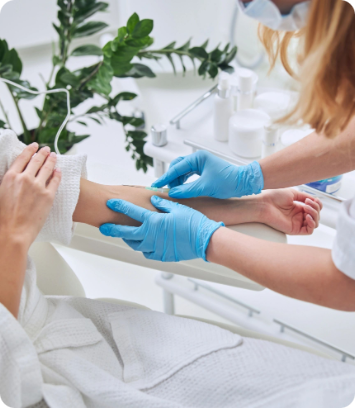
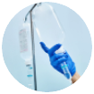

О нас
Наши принципы — быстрота, безопасность и профессионализм.
Наши врачи приезжают в течение часа, работают круглосуточно и гарантируют полную анонимность. Только сертифицированные препараты и опытные специалисты с более чем 10-летним стажем — всё для вашего здоровья и комфорта
Почему нас выбирают?
-
Круглосуточная помощь
Врачи доступны в любое время,
без выходных и перерывов -
Полная анонимность
Гарантируем конфиденциальность
и безопасность данных. -
Быстрое прибытие врача
Врач приедет в течении часа
после вашего вызова -
Опытные врачи
Специалисты с более чем
10-летним опытом работы
Этапы лечения
Все этапы лечения проходят под чётким контролем опытных специалистов для быстрого результата
-
Диагностика и оценка состояния пациента
Врач прибудет к вам в течение часа и проведёт осмотр, определив степень интоксикации и нужное лечение
10-15 минут
-
-
Подготовка и капельница
После диагностики врач подготовит препараты и установит капельницу. Процедура включает детоксикацию и восстановление водного баланса
30-60 минут
-
-
Наблюдение и рекомендации
Врач наблюдает за состоянием пациента для контроля стабилизации. После завершения даёт рекомендации по восстановлению
10-15 минут